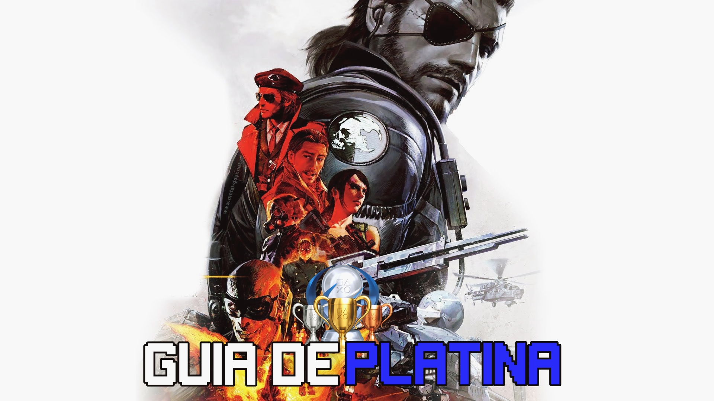

Metal Gear Solid V: The Phantom Pain: Guia de platina
Confira nosso guia para detonar em Metal Gear Solid V: The Phantom Pain!
08 de março de 2020

Metal Gear Solid V: The Phantom Pain é o game que tem a função de fechar de vez a história de Big Boss (Snake) ao explicar um dos raros momentos da série que ainda não haviam sido esclarecidos por Hideo Kojima. Após os eventos de Ground Zeroes, o protagonista passa nove anos em coma, período durante o qual o exército formado durante o jogo Peace Walker se desfaz.
Metal Gear Solid V: The Phantom Pain é o primeiro jogo da franquia que se passa em um ambiente de mundo aberto, possibilitando ao jogador escolher diferentes táticas para chegar até os seus objetivos.
Saiba como recrutar o D-Dog
Saiba como recrutar a Quiet
Todas as missões com Rank S
Ao concluir todas as missões com o Rank S é desbloqueado o troféu: Elite (Cumpra todas as missões com uma classificação S.)
Saiba como desbloquear o final verdadeiro de Metal Gear Solid 5
O primeiro passo necessário é completar todas as missões principais do jogo antes da quest 45. Além disso, complete todas as Side Ops importantes disponíveis (que estão marcadas em amarelo na lista de missões paralelas). Além disso, também é necessário evoluir todas as plataformas de sua Mother Base até, pelo menos, o terceiro nível.
Após cumprir esses pré-requisitos, é necessário também desbloquear a Side Op 150 antes de poder liberar a missão 45 “A Quiet Exit” e continuar o progresso no game.
Passo 3. Avance a história até ver a cena em que Huey é exilado da Mother Base.
Se completou os requisitos e a Side Op 150 não foi liberada, certifique-se de que não está usando o emblema da borboleta para o seu exército, pois ele trava o progresso nessa parte do jogo.
Uma vez que a missão paralela for completada, o usuário poderá jogar a quest 45 “A Quiet Exit” e em seguida a missão 46 “Truth: The Man Who Sold the World” – última tarefa necessária para liberar o final do game.
Além do fim verdadeiro, o jogador também é recompensado com os itens “Star of Betlehem” (que libera o desenvolvimento da Infinity Bandana) e o item chave “Codename: Big Boss” (necessário para desenvolver o uniforme de jaqueta de couro).